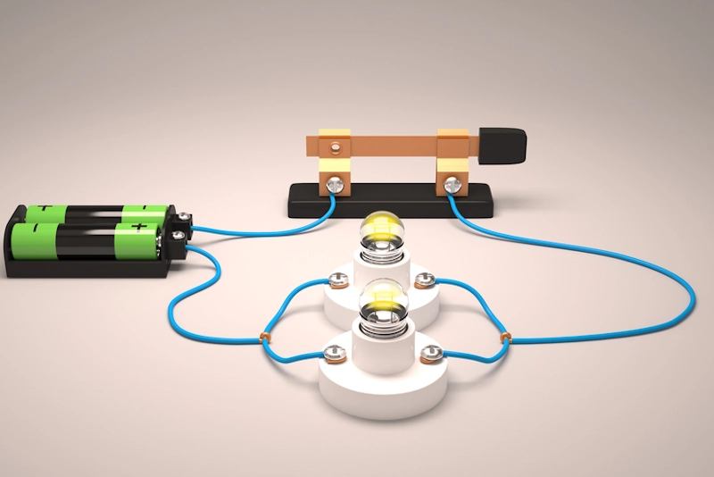
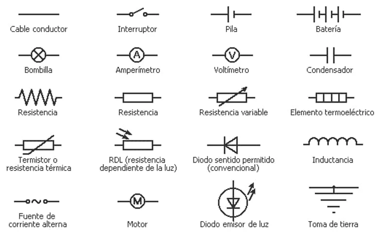
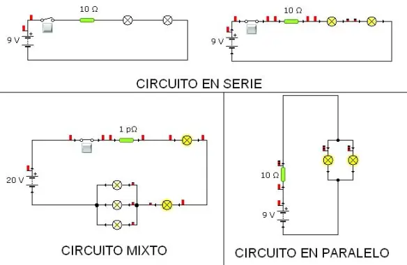
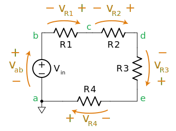

Introducción a los Circuitos Eléctricos
Un circuito eléctrico es una interconexión de componentes eléctricos que permiten el flujo de corriente eléctrica. Estos componentes pueden incluir resistencias, capacitores, inductores, fuentes de voltaje, y más.
Ley de ohm
La ley de Ohm establece que la corriente a través de un conductor entre dos puntos es directamente proporcional a la tensión entre esos dos puntos. La fórmula es V = IR, donde V es el voltaje, I es la corriente y R es la resistencia.

Componentes de un Circuito
Los componentes básicos de un circuito incluyen resistencias, capacitores, inductores y fuentes de energía. Cada uno tiene un rol específico en el comportamiento del circuito.
Circuitos en serie y paralelo
Un circuito en serie tiene todos sus componentes conectados en una sola ruta. En un circuito en paralelo, los componentes están conectados en múltiples rutas. Los circuitos mixtos combinan elementos de ambos tipos.
Leyes de Kirchhoff
Las leyes de Kirchhoff describen la conservación de la carga y la energía en los circuitos eléctricos. La primera ley, también conocida como la Ley de Corrientes de Kirchhoff, establece que la suma de corrientes que entran a un nodo es igual a la suma de corrientes que salen del nodo. La segunda ley, o Ley de Tensiones de Kirchhoff, establece que la suma de las diferencias de potencial en cualquier lazo cerrado es igual a cero.
